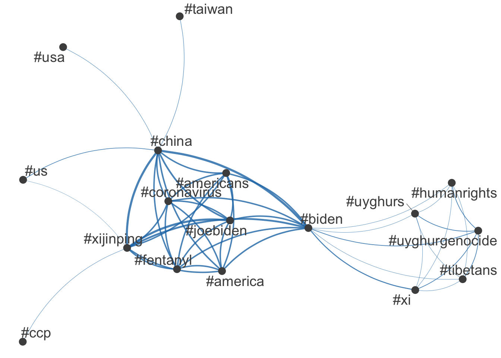
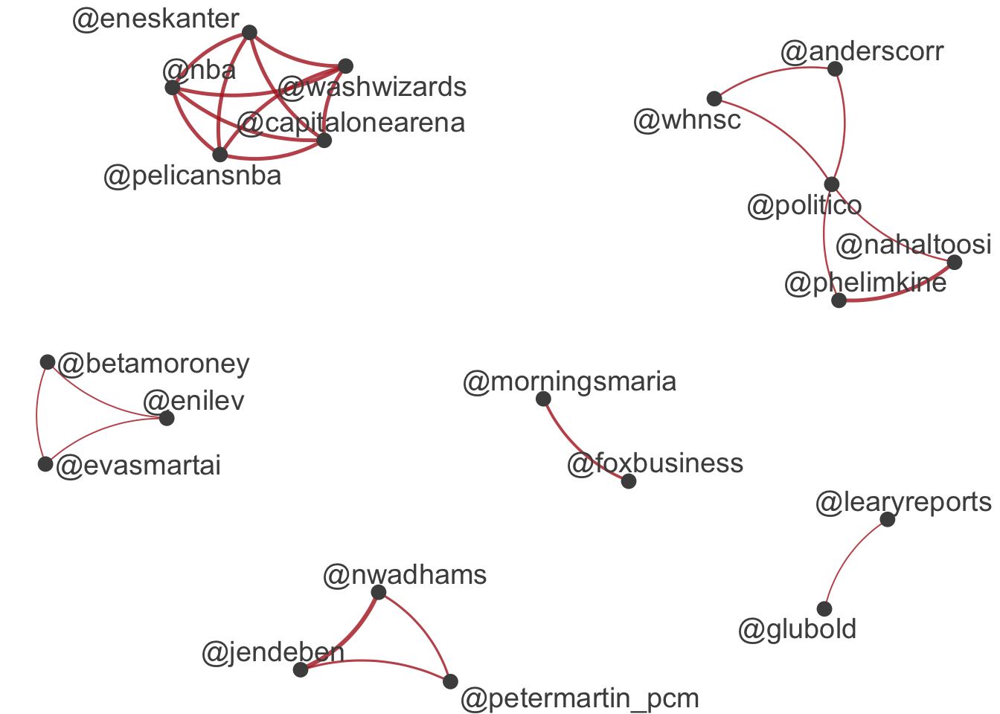
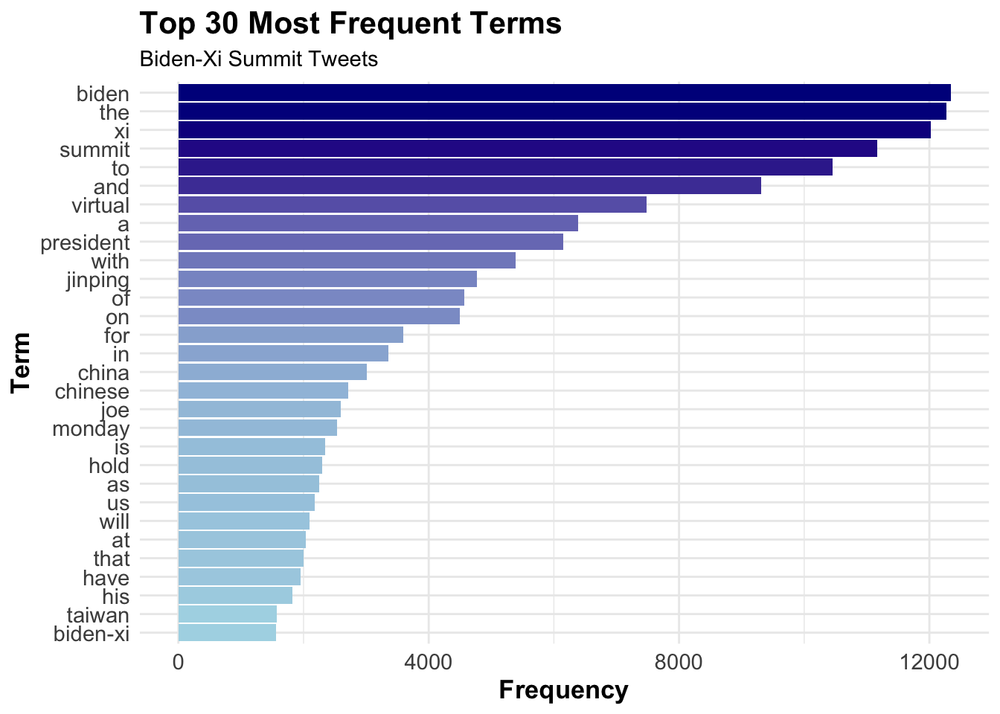

# Sample program for using quanteda for text modeling and analysis
# Documentation: vignette("quickstart", package = "quanteda")
# Website: https://quanteda.io/
# Updated: 2025 - Fixed deprecated functions and modernized syntax
library(quanteda)Package version: 4.3.1
Unicode version: 14.0
ICU version: 71.1Parallel computing: disabledSee https://quanteda.io for tutorials and examples.library(quanteda.textmodels)
library(quanteda.textplots)
library(readr)
library(ggplot2)
# Twitter data about President Biden and Xi summit in November 2021
# Do some background search/study on the event
summit <- read_csv("https://raw.githubusercontent.com/datageneration/datamethods/master/textanalytics/summit_11162021.csv")Rows: 14520 Columns: 90── Column specification ────────────────────────────────────────────────────────
Delimiter: ","
chr (50): screen_name, text, source, reply_to_screen_name, hashtags, symbol...
dbl (26): user_id, status_id, display_text_width, reply_to_status_id, reply...
lgl (10): is_quote, is_retweet, quote_count, reply_count, ext_media_type, q...
dttm (4): created_at, quoted_created_at, retweet_created_at, account_create...
ℹ Use `spec()` to retrieve the full column specification for this data.
ℹ Specify the column types or set `show_col_types = FALSE` to quiet this message.# Instead of View() for reproducible scripts, use head() or glimpse()
head(summit, 10)# A tibble: 10 × 90
user_id status_id created_at screen_name text source
<dbl> <dbl> <dttm> <chr> <chr> <chr>
1 1.38e18 1.46e18 2021-11-16 20:10:23 DSJ78992721 "Breaking News:… Twitt…
2 2.60e 8 1.46e18 2021-11-16 20:10:17 bradhooperarch "https://t.co/r… Twitt…
3 3.00e 9 1.46e18 2021-11-16 20:10:10 scarecrow1113 "[Recap] Biden … Twitt…
4 3.00e 9 1.46e18 2021-11-15 19:24:04 scarecrow1113 "U.S. President… Twitt…
5 1.36e18 1.46e18 2021-11-16 06:22:29 Internl_Leaks "#BREAKING Bide… Twitt…
6 1.36e18 1.46e18 2021-11-16 20:09:36 Internl_Leaks "#BREAKING Bide… Twitt…
7 1.05e18 1.46e18 2021-11-16 20:09:12 Lordsbondserver "No Breakthroug… Twitt…
8 9.55e 8 1.46e18 2021-11-16 20:08:54 KevinCappskj "President Bide… Twitt…
9 1.26e18 1.46e18 2021-11-16 01:00:05 SayNoToSino "Joe Biden and … Twitt…
10 1.26e18 1.46e18 2021-11-16 20:08:24 SayNoToSino "Why did Joe Bi… Twitt…
# ℹ 84 more variables: display_text_width <dbl>, reply_to_status_id <dbl>,
# reply_to_user_id <dbl>, reply_to_screen_name <chr>, is_quote <lgl>,
# is_retweet <lgl>, favorite_count <dbl>, retweet_count <dbl>,
# quote_count <lgl>, reply_count <lgl>, hashtags <chr>, symbols <chr>,
# urls_url <chr>, urls_t.co <chr>, urls_expanded_url <chr>, media_url <chr>,
# media_t.co <chr>, media_expanded_url <chr>, media_type <chr>,
# ext_media_url <chr>, ext_media_t.co <chr>, ext_media_expanded_url <chr>, …sum_twt <- summit$text
# Tokenize the text
toks <- tokens(sum_twt)
print(class(toks))[1] "tokens"# Create document-feature matrix
sumtwtdfm <- dfm(toks)
# Latent Semantic Analysis
# Reference: https://quanteda.io/reference/textmodel_lsa.html
# NOTE: The 'margin' parameter has been deprecated in recent versions
# Use textmodel_lsa() without margin parameter for standard LSA
sum_lsa <- textmodel_lsa(sumtwtdfm, nd = 4)
summary(sum_lsa) Length Class Mode
sk 4 -none- numeric
docs 58080 -none- numeric
features 63972 -none- numeric
matrix_low_rank 232218360 -none- numeric
data 232218360 dgCMatrix S4 head(sum_lsa$docs) [,1] [,2] [,3] [,4]
text1 8.678102e-03 9.529008e-03 -3.178574e-03 1.380732e-02
text2 8.676818e-06 -8.806186e-06 -5.989637e-06 1.677631e-05
text3 2.922127e-03 6.778967e-03 1.131673e-03 -3.176902e-03
text4 1.046624e-02 8.884054e-04 -4.282723e-03 4.960680e-03
text5 3.251208e-03 8.005843e-03 2.208204e-04 -4.656367e-03
text6 3.251208e-03 8.005843e-03 2.208204e-04 -4.656367e-03print(class(sum_lsa))[1] "textmodel_lsa"# Intrepretation of LSA results
# LSA reduced your high-dimensional space (63,972 features) into
# 4 latent semantic dimensions while preserving most of the information.
# What Each Column Represents:
# **Column 1-4**: The 4 latent semantic dimensions
# **Each row** (text1-text6): A document's position in semantic space
# **Cell values**: The document's score/loading on that dimension
### Interpretation:
# | Aspect | Meaning |
# |--------|---------|
# | **Large positive values** | Document strongly represents that semantic concept |
# | **Large negative values** | Document's content opposes that semantic concept |
# | **Values near zero** | Document barely relates to that dimension |
# | **Text2 row** | Very small values overall = document is semantically "neutral" or sparse |
# | **Text4 row** | Larger values = rich semantic content across dimensions |
#
# ============================================================================
# HASHTAG ANALYSIS
# ============================================================================
# Create DFM with punctuation removed
tweet_dfm <- tokens(sum_twt, remove_punct = TRUE) |>
dfm()
head(tweet_dfm)Document-feature matrix of: 6 documents, 15,927 features (99.89% sparse) and 0 docvars.
features
docs breaking news us president biden amp communist china leader xi
text1 1 1 1 1 1 1 1 2 1 1
text2 0 0 0 0 0 0 0 0 0 0
text3 0 0 0 0 1 0 0 0 0 1
text4 0 0 0 1 1 0 0 0 0 1
text5 0 0 0 0 1 0 0 0 0 1
text6 0 0 0 0 1 0 0 0 0 1
[ reached max_nfeat ... 15,917 more features ]# Select hashtags (pattern starting with #)
tag_dfm <- dfm_select(tweet_dfm, pattern = "#*")
toptag <- names(topfeatures(tag_dfm, 50))
head(toptag, 10) [1] "#china" "#biden" "#xijinping" "#joebiden" "#america"
[6] "#americans" "#coronavirus" "#fentanyl" "#xi" "#us" # Feature co-occurrence matrix for hashtags
tag_fcm <- fcm(tag_dfm)
head(tag_fcm)Feature co-occurrence matrix of: 6 by 665 features.
features
features #breaking #breakingnews #biden #china #usa #pray4america
#breaking 0 4 5 5 5 0
#breakingnews 0 0 4 5 4 0
#biden 0 0 0 443 49 0
#china 0 0 0 8 76 0
#usa 0 0 0 0 6 0
#pray4america 0 0 0 0 0 0
features
features #joebiden #xijinping #america #americans
#breaking 0 0 0 0
#breakingnews 0 0 0 0
#biden 299 370 302 295
#china 339 434 308 295
#usa 12 15 0 0
#pray4america 0 0 0 0
[ reached max_nfeat ... 655 more features ]# Select top hashtags for visualization
# Updated: fcm_select() is still valid but ensure compatibility
topgat_fcm <- fcm_select(tag_fcm, pattern = toptag)
# Create network plot with improved parameters
textplot_network(
topgat_fcm,
min_freq = 50,
edge_alpha = 0.8,
edge_size = 1,
vertex_size = 3
)
# ============================================================================
# USER MENTION ANALYSIS
# ============================================================================
# Select user mentions (pattern starting with @)
user_dfm <- dfm_select(tweet_dfm, pattern = "@*")
topuser <- names(topfeatures(user_dfm, 50))
head(topuser, 20) [1] "@potus" "@politico" "@joebiden" "@jendeben"
[5] "@eneskanter" "@nwadhams" "@phelimkine" "@nahaltoosi"
[9] "@nba" "@washwizards" "@pelicansnba" "@capitalonearena"
[13] "@kevinliptakcnn" "@foxbusiness" "@morningsmaria" "@scmpnews"
[17] "@petermartin_pcm" "@nytimes" "@uyghur_american" "@kaylatausche" # Feature co-occurrence matrix for users
user_fcm <- fcm(user_dfm)
head(user_fcm, 20)Feature co-occurrence matrix of: 20 by 711 features.
features
features @youtube @bfmtv @cnn @lauhaim @barackobama @joebiden
@youtube 0 0 0 0 0 0
@bfmtv 0 0 1 1 1 1
@cnn 0 0 0 1 1 1
@lauhaim 0 0 0 0 1 1
@barackobama 0 0 0 0 0 1
@joebiden 0 0 0 0 0 3
@kamalaharris 0 0 0 0 0 0
@hillaryclinton 0 0 0 0 0 0
@billclinton 0 0 0 0 0 0
@cbsnews 0 0 0 0 0 0
features
features @kamalaharris @hillaryclinton @billclinton @cbsnews
@youtube 0 0 0 0
@bfmtv 1 1 1 1
@cnn 1 1 1 1
@lauhaim 1 1 1 1
@barackobama 1 1 1 1
@joebiden 1 1 1 1
@kamalaharris 0 1 1 1
@hillaryclinton 0 0 1 1
@billclinton 0 0 0 1
@cbsnews 0 0 0 0
[ reached max_nfeat ... 10 more features, reached max_nfeat ... 701 more features ]# Select top users for visualization
user_fcm <- fcm_select(user_fcm, pattern = topuser)
# Create network plot for user mentions
textplot_network(
user_fcm,
min_freq = 20,
edge_color = "firebrick",
edge_alpha = 0.8,
edge_size = 1,
vertex_size = 3
)
# ============================================================================
# ADDITIONAL ANALYSIS OPTIONS (for reference)
# ============================================================================
# Optional: Keyword frequency analysis
top_features <- topfeatures(tweet_dfm, 30)
print(top_features) biden the xi summit to and virtual a
12338 12274 12027 11167 10456 9317 7483 6384
president with jinping of on for in china
6148 5388 4766 4564 4498 3589 3359 3011
chinese joe monday is hold as us will
2716 2598 2540 2350 2301 2256 2179 2093
at that have his taiwan biden-xi
2041 2004 1947 1817 1578 1556 library(ggplot2)
library(tidyverse)── Attaching core tidyverse packages ──────────────────────── tidyverse 2.0.0 ──
✔ dplyr 1.1.4 ✔ stringr 1.5.2
✔ forcats 1.0.1 ✔ tibble 3.3.0
✔ lubridate 1.9.4 ✔ tidyr 1.3.1
✔ purrr 1.1.0
── Conflicts ────────────────────────────────────────── tidyverse_conflicts() ──
✖ dplyr::filter() masks stats::filter()
✖ dplyr::lag() masks stats::lag()
ℹ Use the conflicted package (<http://conflicted.r-lib.org/>) to force all conflicts to become errors# Get top features with frequencies
top_freq <- topfeatures(tweet_dfm, 30)
# Convert to dataframe for ggplot
freq_df <- tibble(
word = names(top_freq),
frequency = as.numeric(top_freq)
) %>%
mutate(word = fct_reorder(word, frequency))
# Create frequency plot
ggplot(freq_df, aes(x = frequency, y = word, fill = frequency)) +
geom_col(show.legend = FALSE) +
scale_fill_gradient(low = "lightblue", high = "darkblue") +
labs(
title = "Top 30 Most Frequent Terms",
subtitle = "Biden-Xi Summit Tweets",
x = "Frequency",
y = "Term"
) +
theme_minimal() +
theme(
axis.text = element_text(size = 11),
title = element_text(size = 13, face = "bold")
)